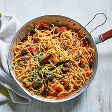

Pasta

Description
Indulge in a medley of flavors with our exquisite pasta dish. Al dente pasta tossed in a luscious blend of garlic-infused olive oil, vibrant cherry tomatoes,and aromatic basil leaves, creating a harmonious symphony of simplicity and taste. A quick, delightful recipe perfect for any occasion.
Ingredients
- 8 ounces (225g) pasta (such as spaghetti, linguine, or fettuccine)
- 3 tablespoons olive oil
- 3 cloves garlic, minced
- 1 cup cherry tomatoes, halved
- Fresh basil leaves, torn or chopped
- Salt and black pepper, to taste
- Grated Parmesan cheese, for serving (optional)
Steps
- Cook pasta until al dente, then drain.
- Sauté minced garlic in olive oil until fragrant.
- Add halved cherry tomatoes, sauté briefly.
- Toss in cooked pasta, mix with fresh basil.
- Season with salt, pepper, and grated Parmesan.
- Serve and enjoy the vibrant, flavorful pasta.
Go to home page